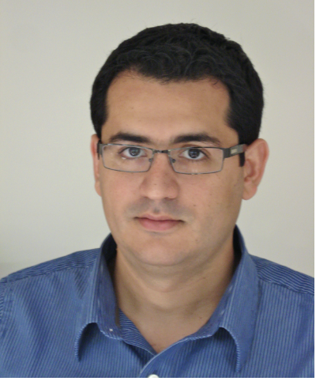
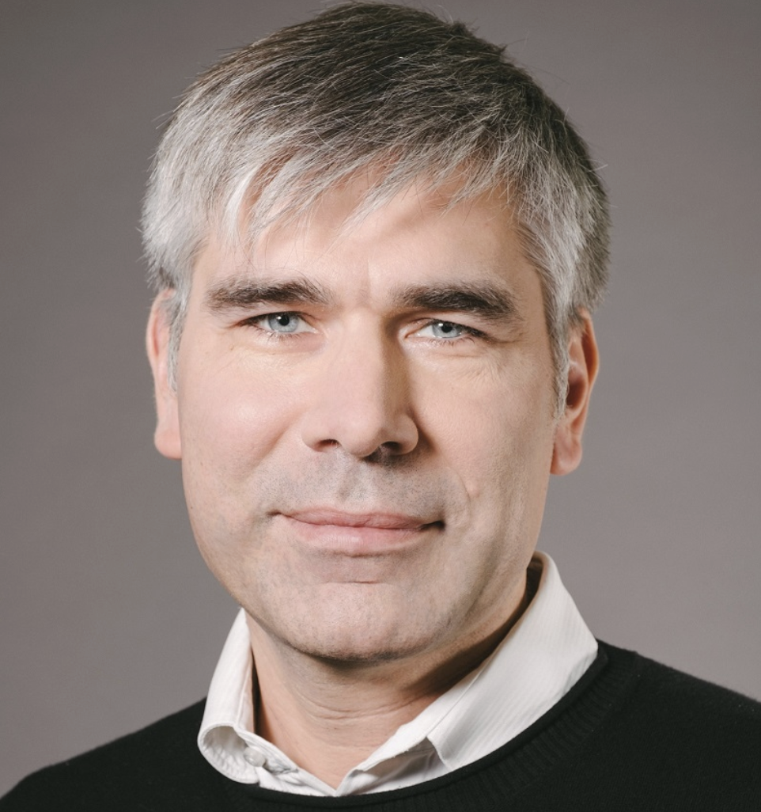
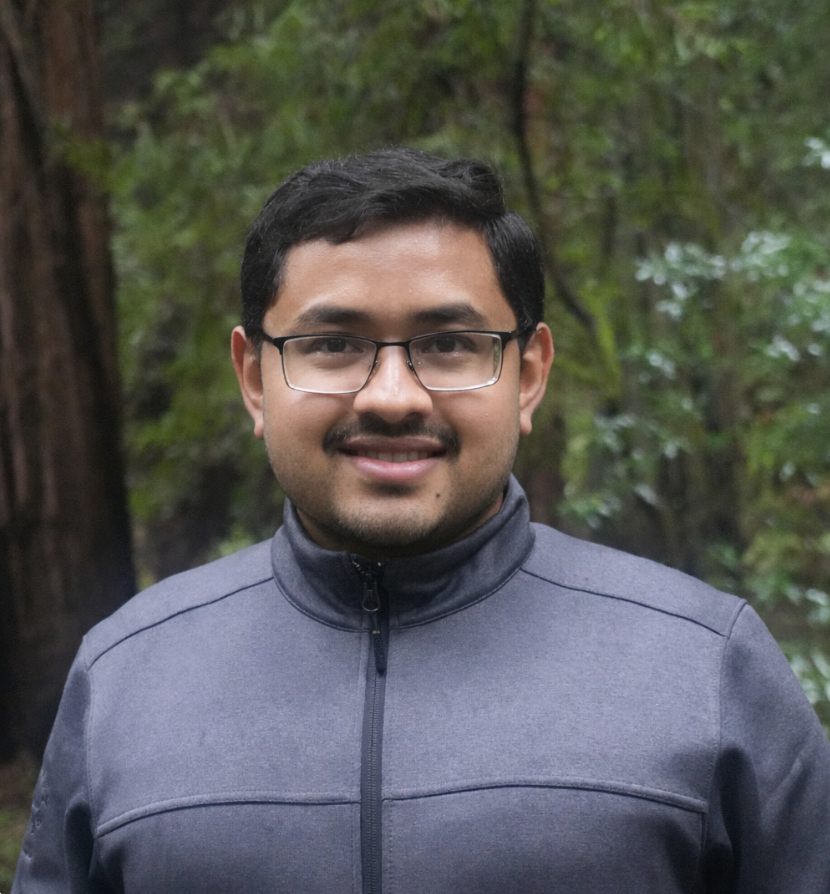
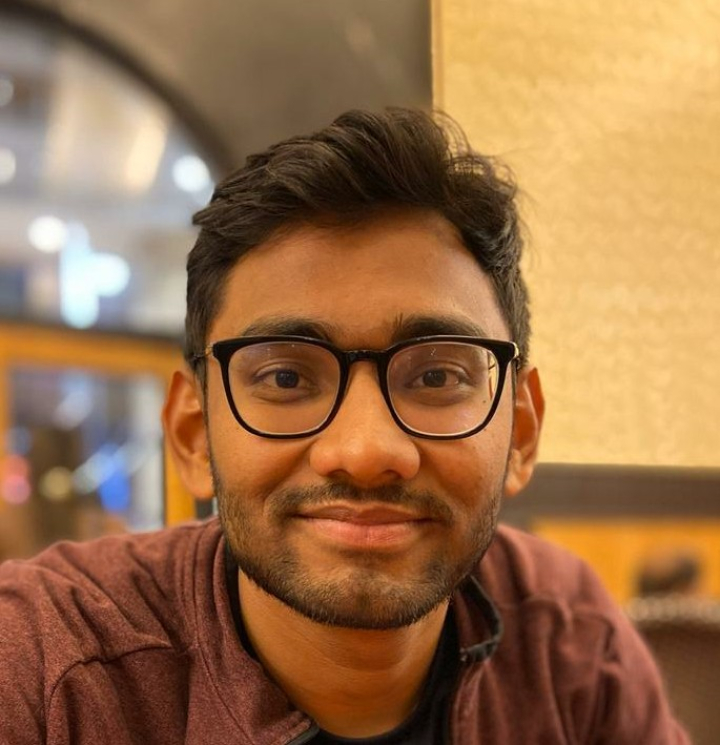
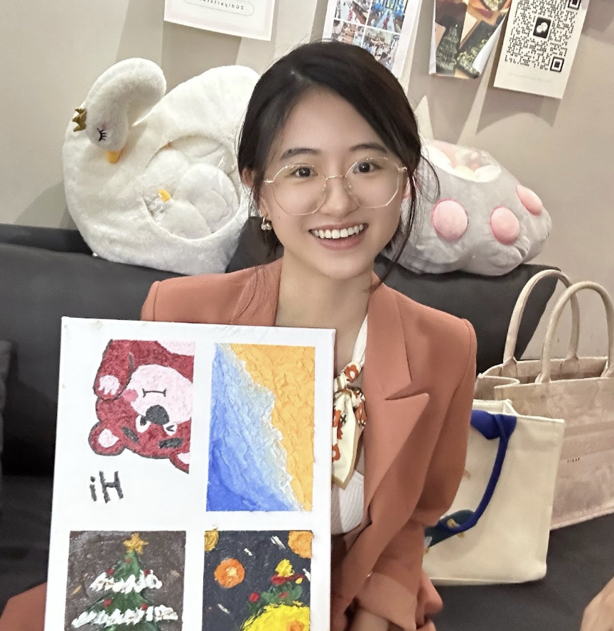
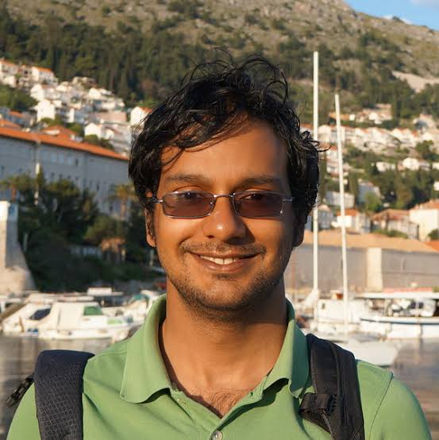
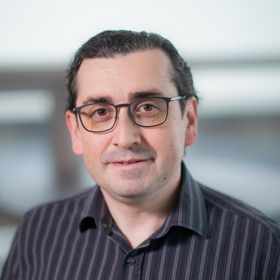

Overview
Recent advances in large language models have demonstrated strong reasoning capabilities in structured domains, but extending these capabilities to video remains an open challenge. Video reasoning requires understanding not only what happens in a scene, but also why events occur, how they relate, and what may happen next.
This workshop brings together researchers studying video reasoning across spatial, temporal, physical, causal, counterfactual, and intent dimensions. We welcome both understanding-based approaches, which reason about observed videos, and generation-based approaches, which simulate possible outcomes. We also consider offline and streaming settings, where models must reason with complete or partial observations.
Our goal is to encourage discussion of methods, benchmarks, and open challenges that advance reliable video reasoning for robotics, embodied AI, and other real-world applications.
Call for Papers
We invite submissions on topics including, but not limited to:
- Video reasoning for understanding, generation, and their integration
- Test-time scaling, adaptive computation, and intermediate representations
- Long-horizon temporal, physical, causal, counterfactual, and intent reasoning
- Streaming video reasoning, partial observability, and belief updating
- New datasets, benchmarks, and evaluations beyond final-answer accuracy
- Physical and causal grounding through simulation and interventions
- Efficient memory, long-context architectures, and multimodal fusion
- Failure modes, hallucination, shortcut learning, and reasoning drift
- Applications in robotics, embodied agents, healthcare, and related domains
Important Dates
Submission deadline: To be announced
Notification: To be announced
Workshop date: To be announced
Submission Information
Paper format, review policy, and submission link will be announced after the workshop details are finalized.
Invited Speakers
Speakers listed in the proposal; participation for this edition is subject to confirmation.

Ali Farhadi
Ivan LaptevOrganizers

Shraman Pramanick
Sanjoy Chowdhury Xiaoqian Shen
Xiaoqian Shen
Jiayun Luo
Anurag Arnab
Leonid SigalProgram
The workshop is planned to include invited talks, contributed paper presentations, a poster session, and a panel discussion. A detailed schedule will be posted when confirmed.
Contact
For questions, please contact Pritam Sarkar.